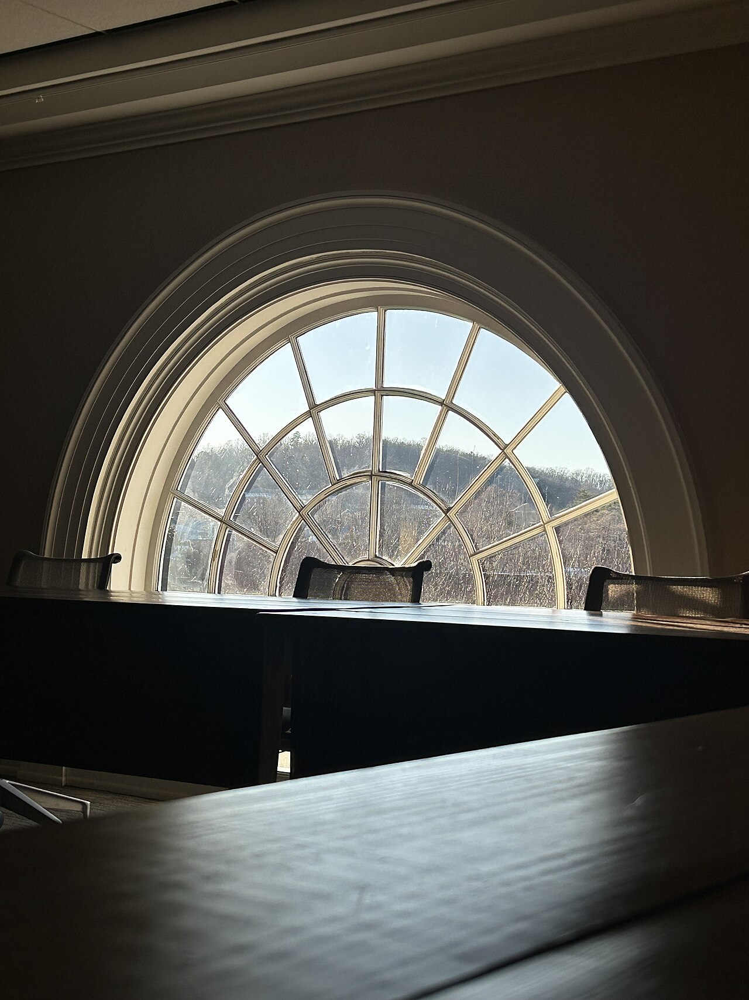
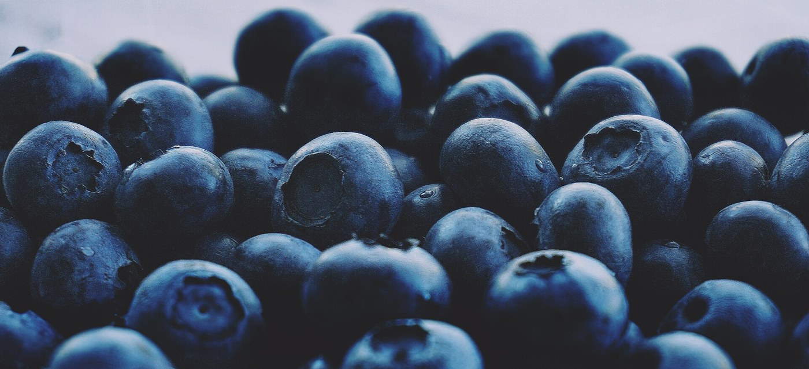

ケーキ
季節のフルーツのケーキ
内容・価格は準備中
ブンキ / 尾道市土堂のカフェ
浮き沈みのある日々の、
気持ちをリセットする分岐点に。
店名は「分岐」から。立ち寄ると、ここから気分が切り替わる小さなカフェです。

店主がつくるケーキが中心です。瀬戸内の季節のフルーツを使ったメニューや、こだわって選んだコーヒー豆、紅茶専門店TEA PONDの茶葉の飲み物があり、ケーキもドリンクもテイクアウトできると紹介されています。
内容・価格は準備中

内容・価格は準備中

内容・価格は準備中

内容・価格は準備中

内容・価格は準備中

内容・価格は準備中

ドリンク
コーヒー・紅茶などのドリンク。メニュー詳細、営業時間、価格はお店からの情報をいただいてから掲載します。
※ メニュー写真はフリー素材のイメージで、お店の実際の商品ではありません。




以下は制作側が作成したイメージ例で、実在のお客様の声ではありません。
ひと息つきたくて立ち寄りました。ケーキを前にすると、気持ちがふっと切り替わるような時間でした。
木のテーブルとやわらかな壁の雰囲気が落ち着きます。席は少なめなので、テイクアウトも考えて行きました。
季節のフルーツのお菓子が楽しみで、尾道を歩いた帰りに寄りたくなる場所です。
Bunkiは2022年1月、尾道市土堂にオープンしたカフェです。店名は「分岐」から。浮き沈みのある日々の中で、気持ちをリセットさせる分岐点のような場所にしたい、という想いが込められていると紹介されています。
建物はもともと公民館だったそうで、コンクリートの簡素なつくりに、アーチを描く漆喰の壁と木のテーブル・椅子がやさしい雰囲気をつくっています。老若男女、誰もが気軽に過ごせる場所を目指しています。
店主がつくるケーキは、季節の瀬戸内のフルーツを使うことも。ケーキやドリンクはテイクアウトもでき、日常で使える雑貨も扱っているとのことです。
※ 上記は公開されている紹介記事をもとにした内容です。最新の情報はInstagramでご確認ください。このページのデザインは制作側のイメージです。
Instagram @bunki_cafe| 屋号 | Bunki(カフェ) |
|---|---|
| 所在地 | 〒722-0035 広島県尾道市土堂２丁目５−７ |
| 電話 | 準備中 |
| 営業時間・定休日 | 準備中 |
| @bunki_cafe |
このページの写真はフリー素材のイメージで、店舗の実際の様子・商品ではありません。実際の写真はお店ご提供のものに差し替えます。
写真クレジット(縮小などの加工あり。尾道市・お店を写したものではありません)
ライセンスの詳細は creativecommons.org をご覧ください。